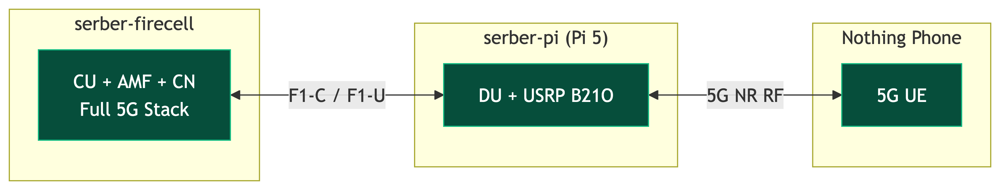
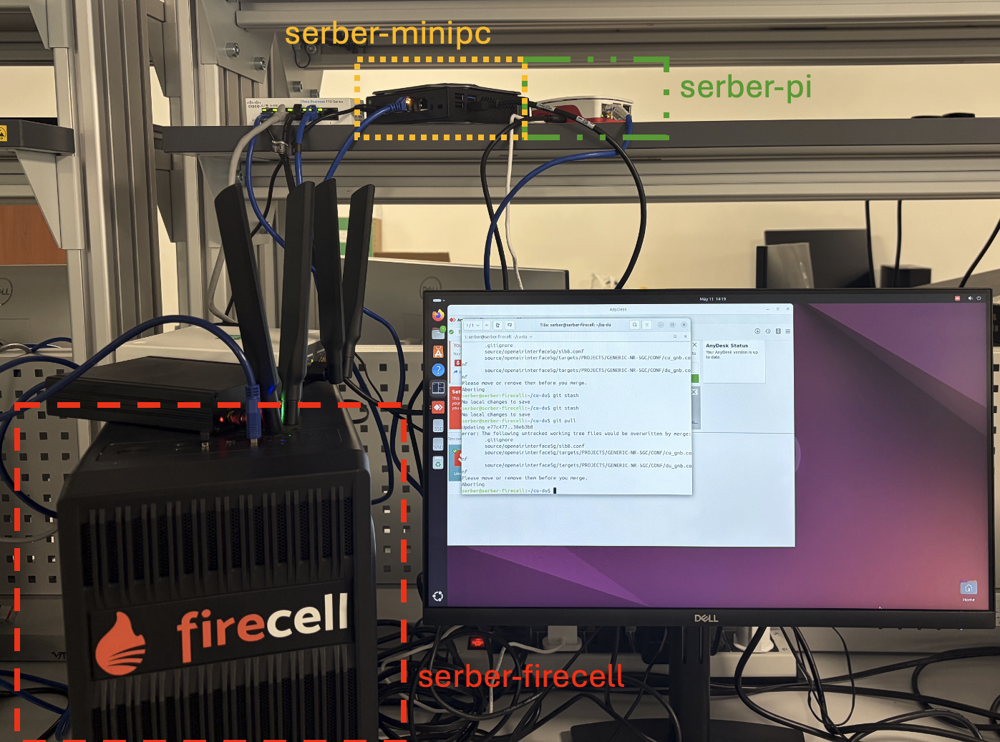
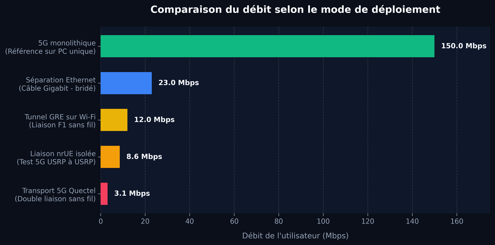

Instead of carrying an entire heavy 5G base station on a drone, we separate the lightweight radio parts from the heavy computing intelligence on the ground.
The core network brain stays safe on the ground, while the drone serves as a lightweight flying relay.
Temporary coverage is vital after floods, forest fires, or critical outages where ground infrastructure is destroyed.
A drone can restore emergency coverage within minutes. The engineering challenge is keeping the airborne equipment light and power-efficient without losing full 5G capabilities.
A standard 5G base station is separated into distinct functional layers:

We built and validated a real-world benchtop setup using accessible hardware:

The system progressed systematically from software simulations to real-world wireless hardware loops.
Key achievements include connecting a commercial phone, broadcasting emergency warnings (PWS), and implementing 5G WireGuard backhauling.
Faced with real-world hardware limits, the project shifted direction to find viable solutions:
We resolved protocol blocks, hardware overloading, and signal saturation to reach a stable prototype.
Our current system has successfully validated all key features of the split 5G architecture.
Performance optimization and final user-traffic validation over the wireless backhaul link are currently under active testing.
Our unified architecture runs on a single central server:
We measured speeds across different connection styles:
While monolithic 5G achieves 150 Mbps, split mode drops to 23 Mbps. Moving the DU to stronger hardware did not increase speed.
The scheduler pins transmission rates to the lowest setting (MCS 0) due to delayed channel reports.

We have moved from simulation to a real, separated 5G network with wireless backhaul.
Our next challenge is making this setup fast, reproducible, and ready for drone flights.